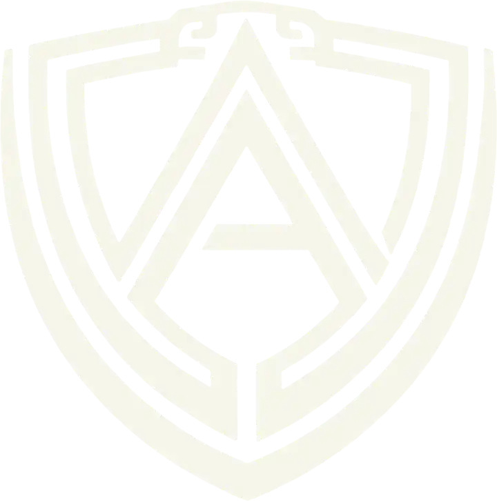
A chave que confirma que é você
A Aspen Key foi pensada para ficar no seu chaveiro. Depois de digitar a senha, você aproxima a chave do celular e confirma o acesso à sua conta.
Quero ser avisadoVer como funciona
Protótipo em desenvolvimento. O design final pode mudar.
O protótipo já conclui o acesso a um site de teste, mas ainda não foi usado em contas reais.
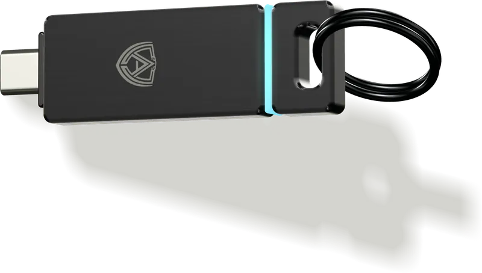
O que é a Aspen Key
No chaveiro
Um bastão fino de metal, com cerca de 20 mm de largura e anel para chaveiro.
Junto com a senha
Uma segunda confirmação, na forma de um objeto que está com você.
Celular e computador
Por aproximação no celular, via NFC, ou ligada ao computador por USB-C.
Padrão aberto
Desenvolvida sobre o padrão FIDO2. A certificação ainda não foi obtida.
Características da versão final planejada. O protótipo de hoje é uma montagem de bancada.
Quem obtém a sua senha pode acessar a sua conta como se fosse você
Basta uma mensagem com um link falso e uma página que imita a do banco. A senha digitada ali passa a ficar em poder de outra pessoa.
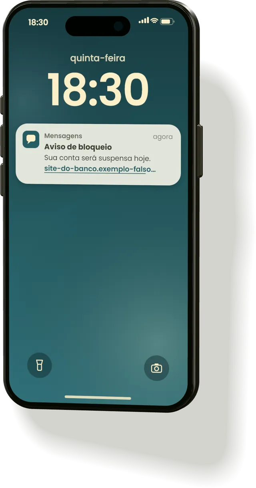
A Aspen Key está sendo desenvolvida para acrescentar à senha uma segunda confirmação de que é você, na forma de um objeto físico que fica no seu chaveiro.
Três passos para entrar
É assim que o produto final foi pensado. O protótipo de hoje ainda não funciona exatamente assim.
-
Aproxime
Ao entrar numa conta, depois de digitar a senha, você aproxima a Aspen Key do celular.
-
Confie
A chave comprova que quem está entrando é você, e não apenas alguém que conhece a sua senha.
-
Acesse
Com a senha e a chave confirmadas, o acesso à conta é liberado.
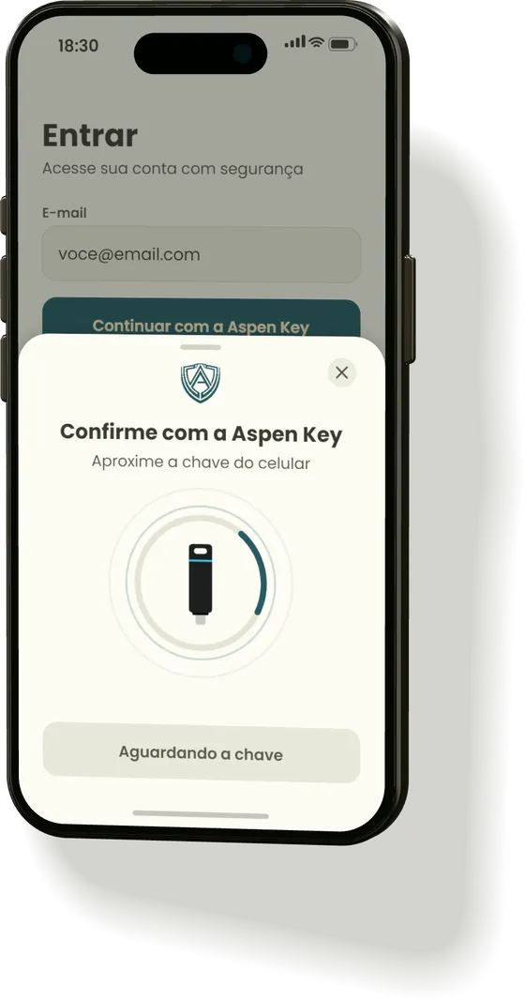
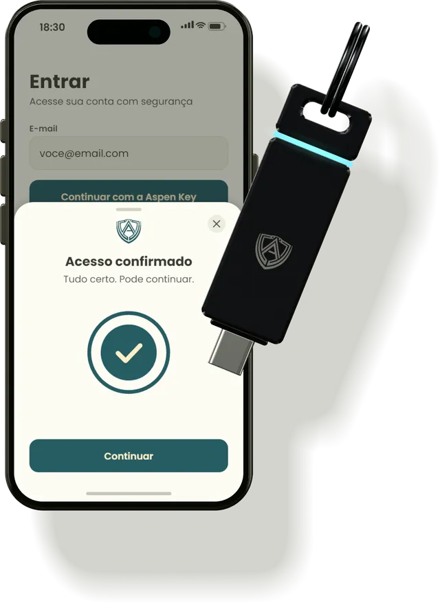
Feita para o seu chaveiro
Discreta, de metal preto escovado e com uma faixa de luz ciano. Este é o desenho que queremos entregar.
Ilustração da ideia final. O protótipo de hoje é diferente.
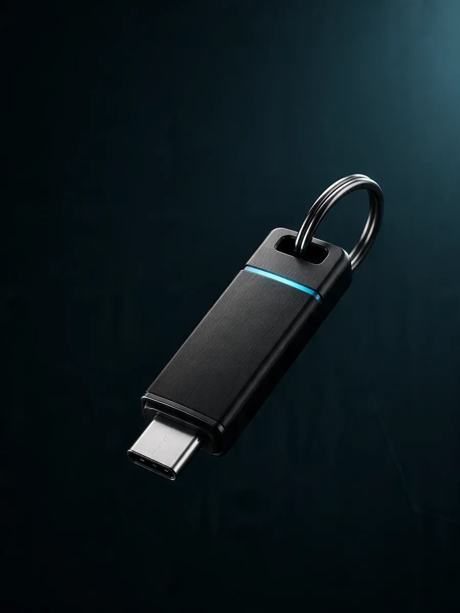
Ficha da versão final planejada
- Formato
- Bastão de metal preto escovado
- Largura
- Cerca de 20 mm
- Espessura
- Cerca de 6,6 mm
- Conector
- USB-C
- Luz
- Faixa fina de LED ciano
- Topo
- Anel para chaveiro
- Marca
- Escudo da Aspen gravado de forma discreta
- Chip
- Chip de segurança criptográfico
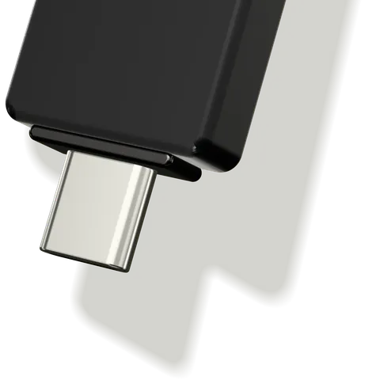
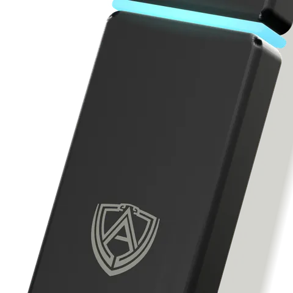
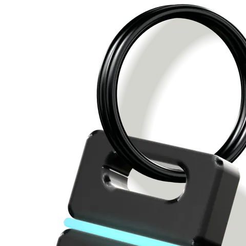
Imagens 3D da ideia final. O protótipo de hoje é diferente.
Já saiu do papel
O protótipo é uma montagem de bancada, feita à mão sobre uma protoboard, e já conclui o acesso a um site de teste. Veja as fotos reais e explore as peças em 3D.
Fotos do protótipo
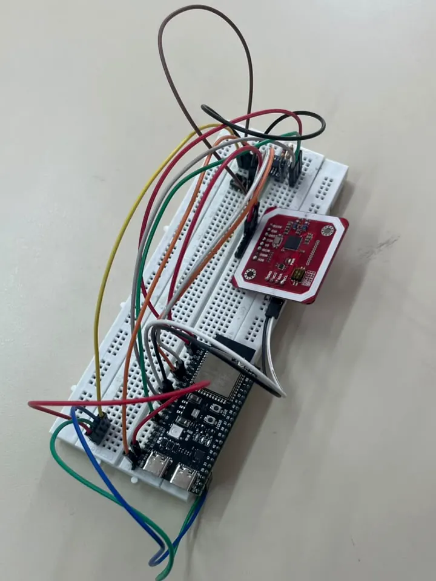
A montagem completa. 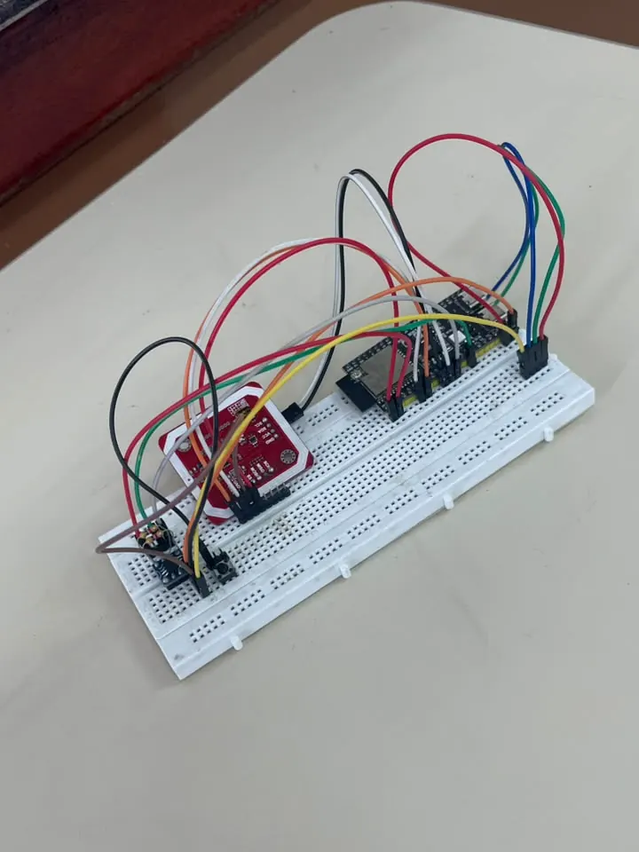
Vista lateral da protoboard. 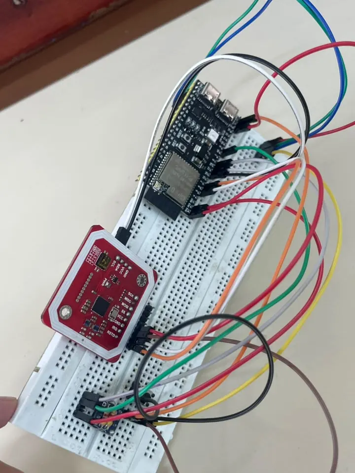
Leitor NFC e placa principal. 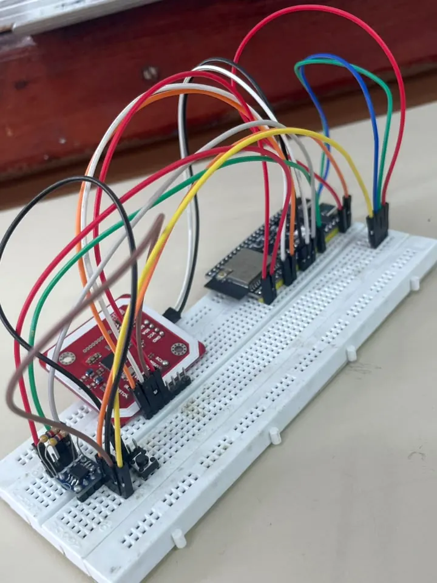
Ligações feitas fio a fio. 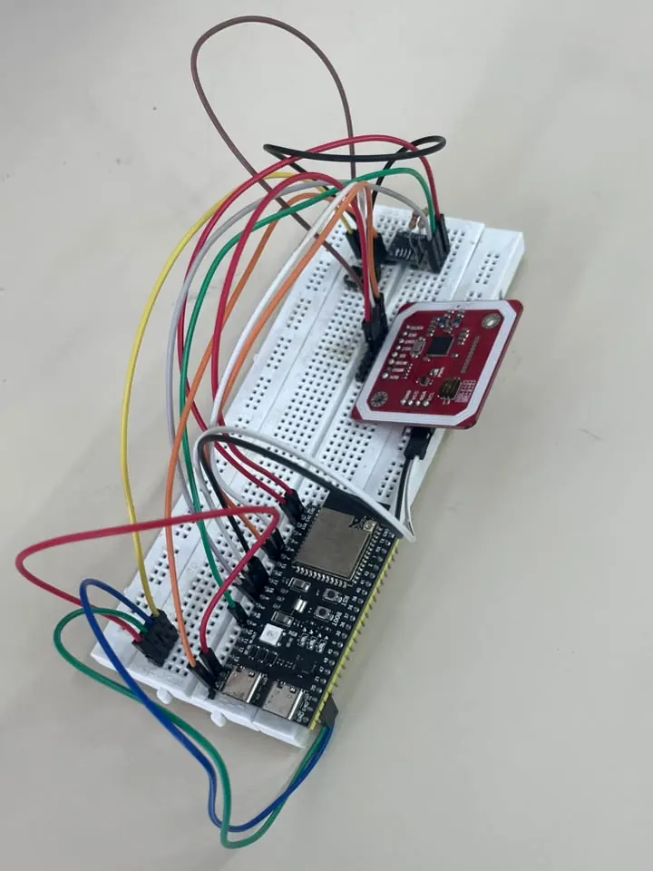
As duas portas USB-C da placa. 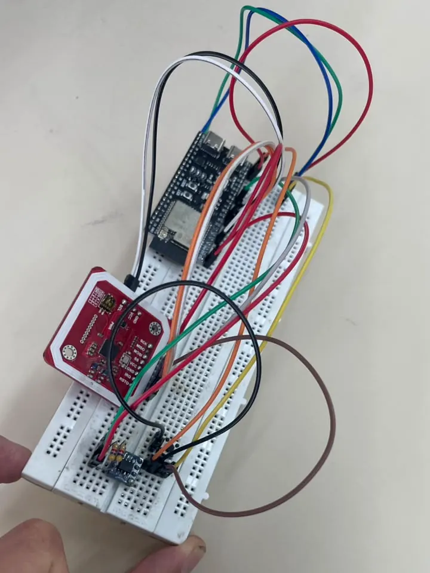
Na mão, para comparar o tamanho. 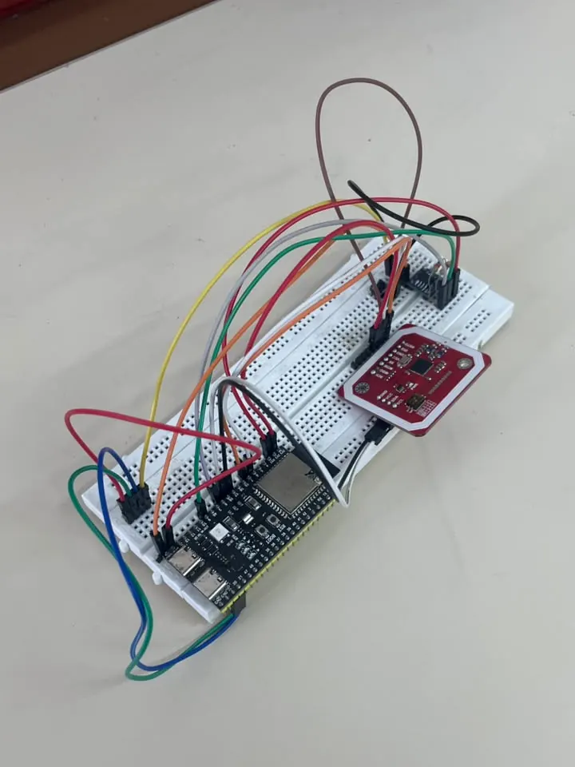
A bancada vista de cima. 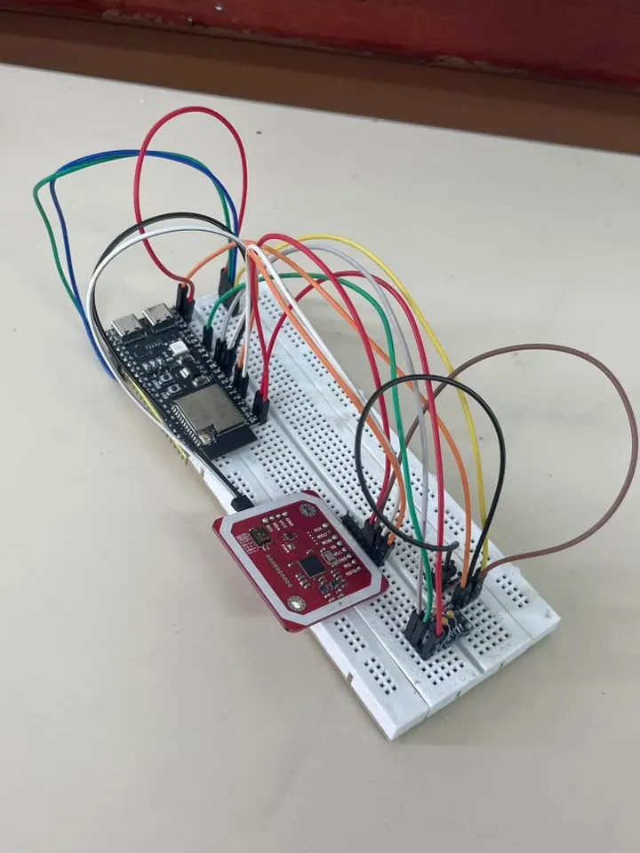
O leitor NFC. A moldura branca é a antena.
O protótipo em 3D
Abrir em tela cheia (abre em outra aba)Arraste para girar a montagem e selecione uma peça para ver a sua função. Em "Como funciona", acompanhe o acesso a um site de teste pelo USB. A parte do NFC ilustra um uso que ainda não está ativo no protótipo.
O que já faz
- Acessa um site de teste pelo USB, com PIN e confirmação por toque no botão, no padrão FIDO2.
- Assina o desafio do site com criptografia assimétrica, e o navegador valida a assinatura.
Ainda em desenvolvimento
- NFC, que já tem o código funcionando, mas ainda não é usado no protótipo.
- Uso em contas reais, que ainda não foi feito.
- Certificação FIDO, que ainda não foi obtida.
- Venda, porque a chave ainda não está disponível.
O que é hash e criptografia assimétrica?
O protótipo funcionando
PENDENTE: vídeo curto do protótipo entrando num site de teste (pendência P04).
O que aparece no vídeo
PENDENTE: descrever em 2 a 4 frases, na ordem, o que aparece no vídeo (pendência P05).
Protótipo em desenvolvimento. O design final pode mudar.
Seja avisado no lançamento
Deixe o seu e-mail na lista de espera e receba um aviso quando a Aspen Key for lançada. O endereço será usado somente para essa comunicação.
Para tratar de investimento, imprensa ou outros assuntos, escreva para aspencorp0@gmail.com.
Cadastro confirmado.
Você está na lista de espera e será avisado por e-mail quando a Aspen Key for lançada. Para sair da lista, escreva para aspencorp0@gmail.com.
Perguntas frequentes
Já funciona?
Em parte. O protótipo já acessa um site de teste pelo USB, com PIN e confirmação física, e assina com criptografia assimétrica. O código do NFC já funciona, mas ele ainda não é usado no protótipo. A chave ainda não foi usada em contas reais e não possui certificação FIDO.
Substitui a minha senha?
Não. A proposta é que a chave seja usada junto com a senha, como uma confirmação adicional de que é você.
Quando lança?
Ainda não há data definida. Quem entrar na lista de espera será avisado por e-mail quando houver.
Quanto custa?
O preço ainda não foi definido.
O que é hash e criptografia assimétrica?
Hash é um cálculo que transforma qualquer dado em um código curto, uma espécie de impressão digital desse dado. A criptografia assimétrica usa um par de chaves, uma secreta e outra que pode ser divulgada, e permite comprovar a identidade sem revelar a parte secreta. O protótipo usa os dois recursos para assinar o desafio enviado pelo site.
Por que o design pode mudar?
Porque ainda é um protótipo. Formato, acabamento e detalhes podem mudar até a versão final.
O que vocês fazem com o meu e-mail?
Usamos o e-mail apenas para avisar sobre o lançamento da Aspen Key. Você pode pedir para sair da lista a qualquer momento, pelo aspencorp0@gmail.com. Os detalhes estão na Política de privacidade.
Quem está por trás da Aspen Core?
A Aspen Core é um projeto brasileiro, hoje em fase de protótipo, que desenvolve a Aspen Key. No Instagram @aspencore_, publicamos conteúdo sobre como se defender de golpes digitais.